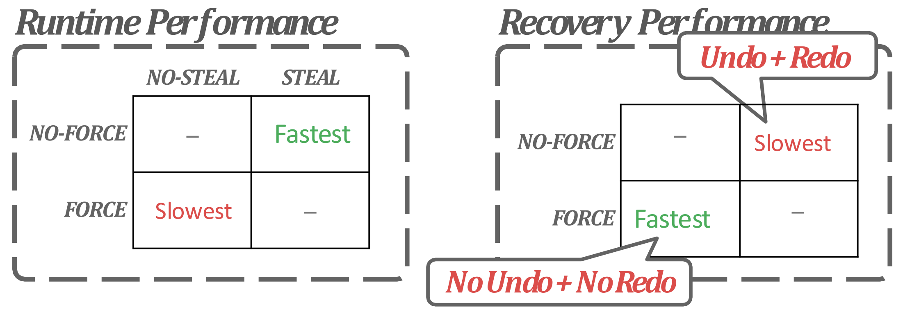
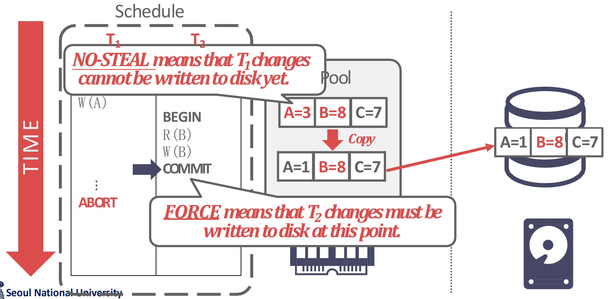
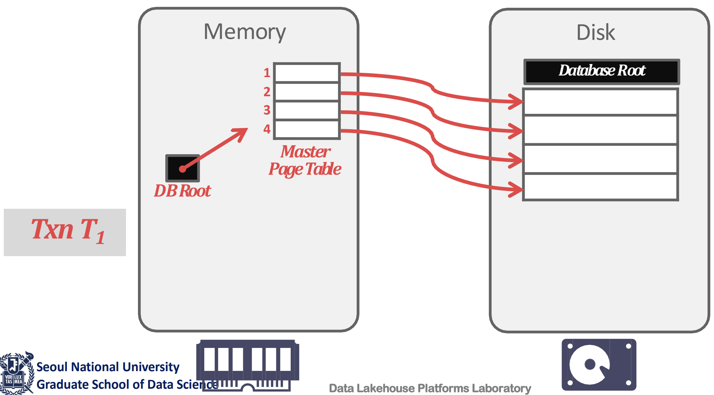
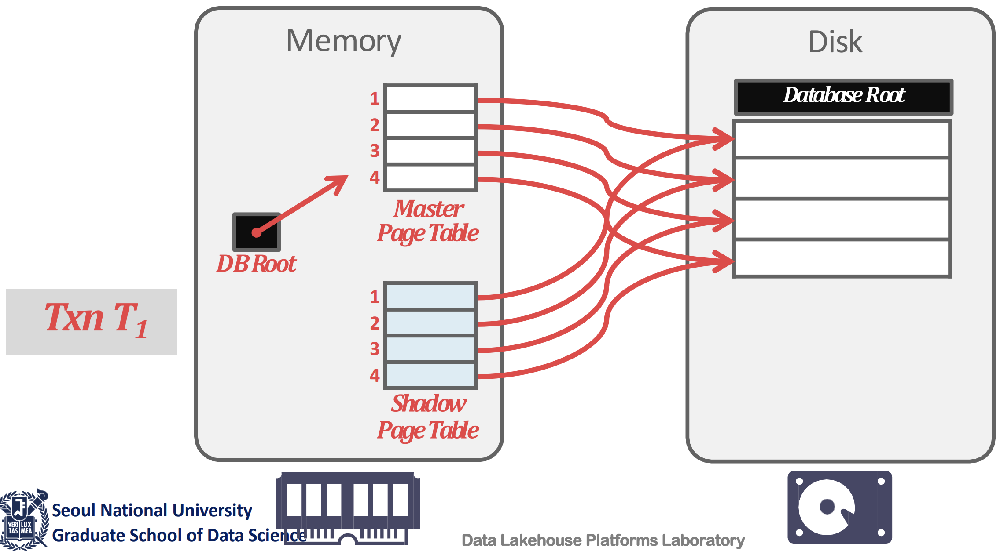
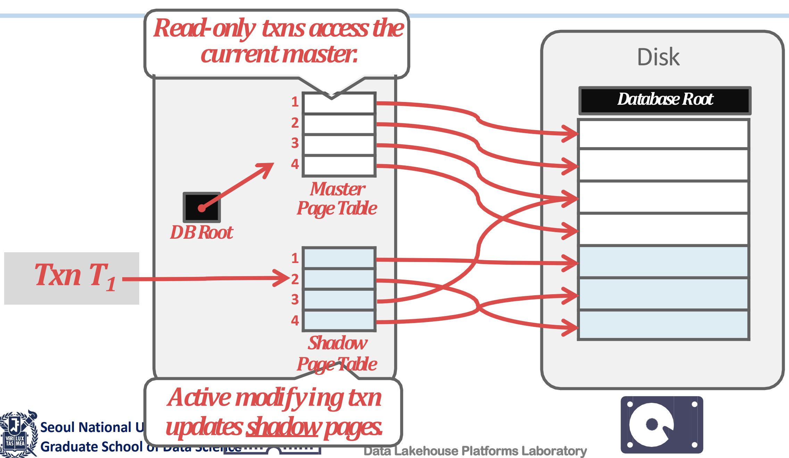
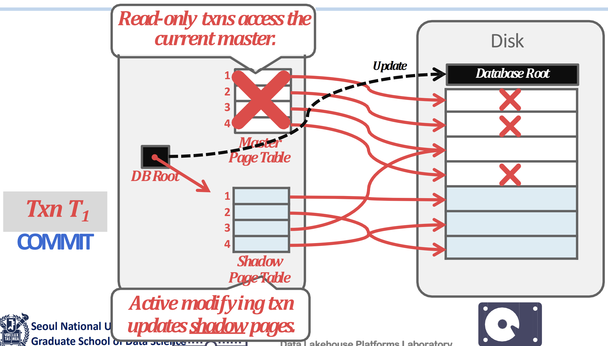

서울대학교 데이터사이언스대학원 정형수 교수님의 "데이터사이언스 응용을 위한 빅데이터 및 지식 관리 시스템" 강의를 필기한 내용입니다.
Recovery Manager
- 이제 transaction processing 의 두번째 중요한 component 인 Recovery Manager 를 할 차례다.
- Transaction 의 ACID 를 다시 한번 보자.
- Isolation: 이건 Concurrency Control 에서 충족시켜준다.
- Consistency: 얘는 Query Planner 에서 충족시켜준다.
- 나머지 두개가 Recovery Manager 가 다루는 부분이다 - 합쳐서 Durable-Atomicity 라고 한다.
- Durability: Failure after committing 상황을 핸들링해서 요놈들을 persistent 하게 해야 한다.
- Atomicity: Failure before committing 상황을 핸들링해서 요놈들은 persistent 하지 않게 해야 한다.
Overview of Recovery
- Recovery 에서 가장 널리 사용되는 것은 ARIES 인데, 이때
- Concurrency Control Protocol 은 2PL 을 사용한다고 가정한다.
- MVCC 없이, in-place update 를 한다고 가정한다.
- Recovery 를 두줄요약하면 다음과 같다:
- Durability 를 위해 failure 이 났을 때, non-durable commit 을 살려내야 한다: REDO
- 반대로 atomicity 를 위해 non-commit data 를 지우는 것: UNDO
- 이때 문제의 근원은 buffer manager 때문이다.
- Most recent data 가 disk 가 아닌 buffer 에 있기 때문에 REDO 를 하는 것이고, 또한 buffer manager 의 eviction process 때문에 이상한 값이 disk 로 내려가기 때문에 UNDO 를 하는 것이다.
Type of Failure
- 일단 fail 의 종류에는 세 종류가 있다.
- Transaction Fail
- 여기에는 뭐 constraint violation 등의 Logical Error 나 deadlock 같은 Internal State Error 가 있다.
- System Fail
- 이거는 DBMS process 가 죽거나, OS kernel panic 등의 System Failure 나 system shutdown 등의 Hardware Failure 상황이 있다.
- Storage Fail
- 말 그대로 disk 가 뻗는 경우인데, 이때는 복구가 안된다.
- 얘는 저장된 데이터조차 망가져있기 때문에 recovery protocol 로는 복구를 못한다.
- 이걸 대비하기 위해서는 RAID 나 consensus 같은 다른 해결책을 찾아야한다.
- Transaction Fail
UNDO vs REDO
- UNDO: Atomicity 를 위해 uncommitted data 를 log 를 보고 되돌리는 행위를 말한다.
- REDO: Durability 를 위해 commiteted data 를 log 를 보고 반영하는 행위를 말한다.
Buffer Manager Policy
- 위에서 말한 대로 recovery 가 필요한 것은 buffer manager 때문이다.
- 따라서 buffer manager 를 어떻게 굴리냐에 따라 recovery 의 방법이 달라진다.

- NO STEAL: 아직 내가 붙들고 update 중인 buffer page 를 “빼앗아” 서 storage 에 flush 하지 마라.
- 따라서 이때는 failure before commit 시에 어차피 disk 에 저장되지 않았기 때문에 atomicity 를 위해 추가적인 작업 (UNDO) 을 하지 않아도 된다.
- FORCE: 내가 commit 하면, update 된 data 를 “강제로” flush 해라.
- 따라서 failure after commit 시에 이미 disk 에 저장되어있기 때문에 durability 가 자연스레 보장된다.
- 그래서 NO STEAL, FORCE 면 recovery 할게 없다.
- 하지만 당연히 이렇게 안한다: NO STEAL 이면 메모리 사용량이 너무 크고 FORCE 면 WAF 가 커진다
- WAF 가 커지는 것은 update 시마다 16K page flush 가 발생하므로.
- 이 WAF 가 log 의 motivation 이 된다: 더 적은 양의 “Log” 만 저장해 WAF 를 줄이고자 하는 것이다.
- 이 log 는 매 write operation 마다 저장된다.
- 따라서 반대의 tradeoff 가 있다고 할 수 있다:
- STEAL 이면 메모리 사용량이 좋은 대신 buffer 가 commit 되지 않아도 flush 될 수 있기 때문에 failure 시에 log 를 UNDO 해서 지워버려야 한다.
- NO FORCE 면 IO overhead 가 줄어드는 대신 failure 시에 log 를 REDO 해서 살려내야 한다.
- 이런 tradeoff 사이에서 거의 대부분의 DBMS 는 NO FORCE, STEAL + Logging + Recovery 정책으로 간다.
- FORCE 를 제공하는 DBMS 는 없다. 너무 느리기 때문.
- NO STEAL 을 제공하는 DBMS 는 있다: MongoDB
- 따라서 이때는 flush 할 때 skiplist 를 이용해 uncommitted data 를 걸러서 page 를 rebuild 한 다음 flush 하는 전략을 취한다고 한다.
Using NO STEAL, FORCE Policy
- 만약에 NO STEAL, FORCE 를 쓴다면 어떨까? 다음과 같은 방법들이 있을 것이다.
- 물론 위에서 말한 것처럼 이짓을 하는 DBMS 는 없다. 하지만 여기에서 FORCE 만 뺀 NO STEAL 은 사용해봄즉하니, 이런 design consideration 도 아주 무쓸모는 아닐 것이다.
Copy Committed

- 위 그림처럼, NO STEAL + FORCE 일 때는 page 에 uncommitted update 가 있을 떄 이런애들은 모두 골라서 commit 된 애들만 flush 하게 할 수 있다.
- 즉, copy 본을 갖고 있는 것.
Shadow Paging
- 위 방식에서 uncommitted data 를 골라내는 것에 overhead 가 있기 때문에, page 단위로 copy-on-write 하자는 것이 Shadow Paging 이다.

- 일단 생김새는 위 그림처럼 생겼다.
- Buffer pool 의 page table 과, active page table 을 가리키는 DB Root 이 있다.

- Write 를 할 때 우선 page table 전체를 copy 해온다.
- 이때의 page table 을 Shadow Page Table 이라고 한다.
- 그럼 일단 이 상태에서는 각 shadow page table 들의 entry 들은 기존의 page 들을 가리키고 있다.

- 그리고 write 를 하면, 해당 page 를 copy 한 다음 write 를 한다
- 이때의 copy-on-write 된 page 들을 Shadow Page 라고 한다.
- 또한 이 shadow page 를 가리키도록 shadow page table 을 고쳐준다.

- 만약 commit 이 되면, 현재의 page table 을 가리키는 pointer 를 이 shadow table 로 바꿔버리고 기존의 page table 과 unreferenced page 들을 정리한다.
- 하지만 commit 되지 않으면, 이 shadow page table + shadow page 들을 전부 정리한다.
- 따라서 recovery 도 빠르다: UNDO 를 위해서는 shadow page table + shadow page 를 아무생각없이 지워주면 되고, REDO 는 필요 없기 때문.
- 근데 당연히 WAF 가 크다.
Logging
- Logging 은 말 그대로 Log 를 생성하는 것으로, recovery 를 위한 normal case task 이다.
- 이것이 기존의 FORCE 에 비해 좋은 이유는
- FORCE 를 위해서는 small random write 을 해야 했었는데 (dirty page 에서 변경된 부분만 flush 하는 경우라면)
- Log 를 buffer 에 담아서 보내면 이런 smal random write 가 big sequential write 로 바뀌기 때문.
옮겨진 section: WAL
여기부터는
2024-12-4내용
Group Commit
- 이놈은 log 를 page 단위로 모아서 flush 하기 위해 page 가 다 차는 시점까지
COMMIT을 미루고 한꺼번에COMMIT, flush 하는 방법이다.- 물론 page 가 다 차면
COMMIT전에도 flush 를 한다. - 여기서
COMMIT을 미루는 것은 당연히 WAL protocol 을 준수하기 위함이다.
- 물론 page 가 다 차면
- 개별 txn 관점에서는 delay 가 있을 수 있으나 전체적으로는 그리 크지 않다고 한다.
- Modern DB 들은 대부분 이렇게 작동하고 있다고 한다.
- 다만 무한정 기다리고있지는 않다; 너무 오래걸린다 싶으면 delay 를 멈추고 그냥 flush 한다.
옮겨진 section: Log Message Schemes
Checkpoint
- Checkpoint 는 특별한 log 인데, “이 시점까지는 완벽함” 이라는 의미를 가지고 있다.
- 즉, 이것 이전에 대해서는 recovery 를 하지 않아도 된다는 것.
- Log message 에는
CHECKPOINT라고 적힌다.
- 주된 목적은 recovery 시에 할일을 줄이기 위해서 이다: 따라서 주기적으로 page 를 flush 하고 관련된 log 들을 truncate 해서 Checkpoint 를 생성한다.
- 즉, 주기적으로 FORCE 해서 crash 시에 recovery 시작시점을 중간중간 땡겨주는 셈이라고 할 수 있다.
- Checkpoint 생성 빈도는 짧으면 recovery 도 짧아지지만, 너무 짧으면 FORCE 정책이나 다를바가 없고, 길면 IO overhead 는 줄어들지만 recovery 가 오래걸린다.
- 또한 Checkpoint 는 무거운 연산이어서 너무 자주하면 성능이 많이 떨어진다.
- 따라서 이 빈도는 configurable 하게 한다: Target recovery time configuration
- 즉, 이 time 마다 checkpoint 하는 것.
- Checkpoint 이전에 commit 된 놈은 checkpoint 시에 전부 flush 되었으므로 해당 log 는 지우는 truncation 도 한다.
- Recover 시에는 이 checkpoint 시점을 시작으로 복구한다.
- Checkpoint 시점에 작동중인 애들을 같이 적어주게 되는데, 얘네들이 recovery target 이 된다.
- 이건 뒤에서 recovery part 에서 좀 더 살펴보자.